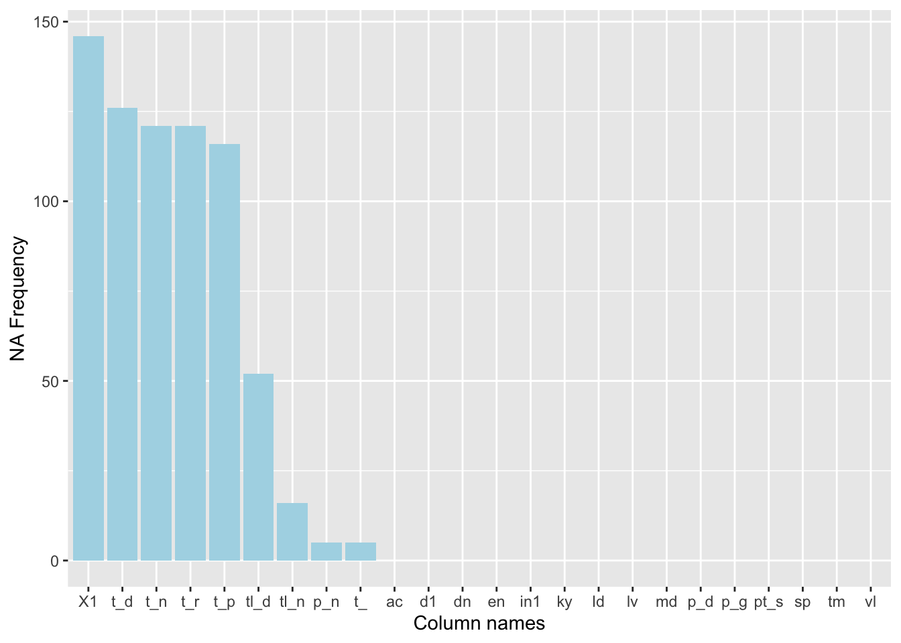
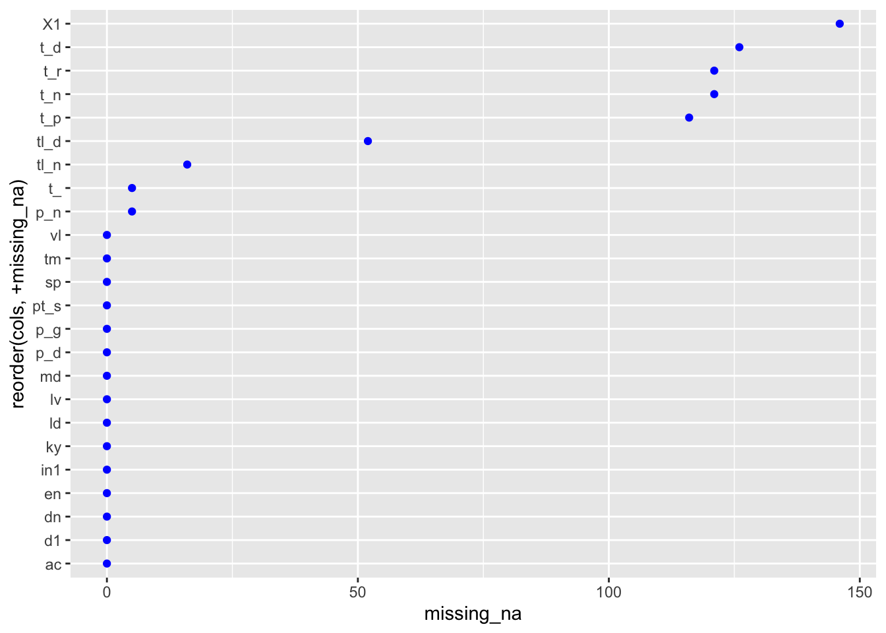
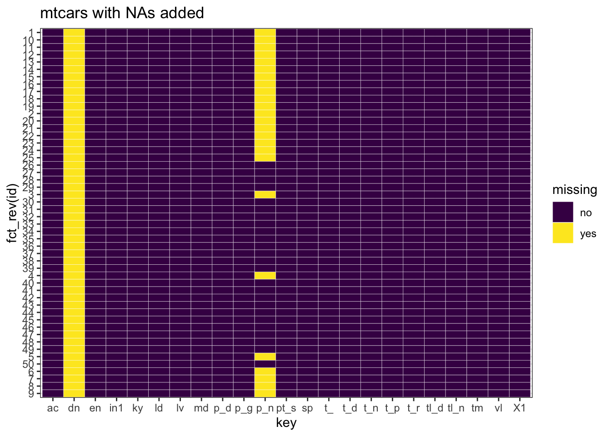
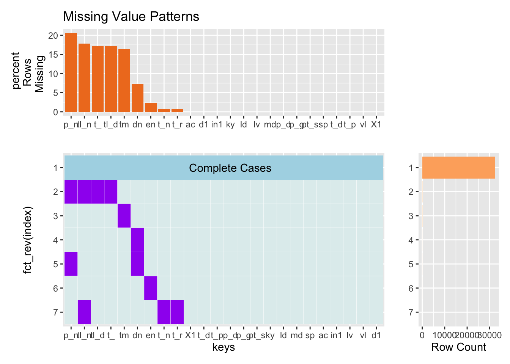
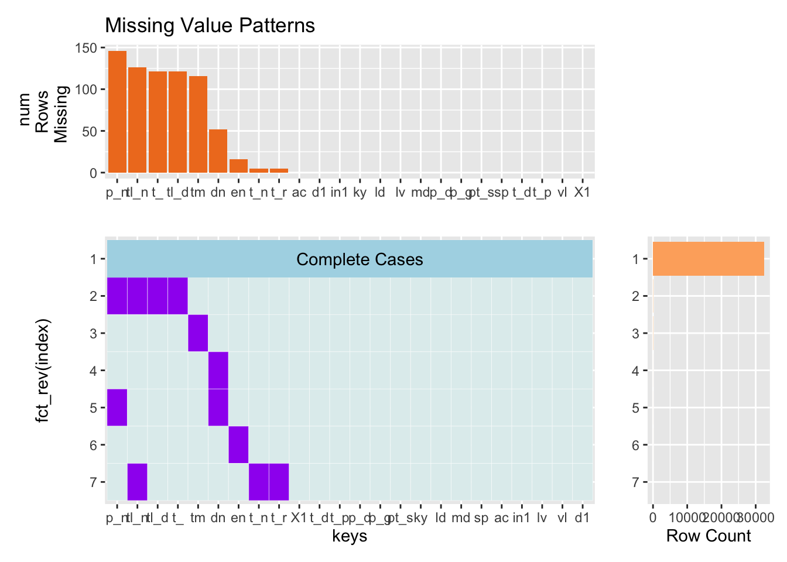

Chapter 4 Missing values
4.1 Barplot

Firstly, we plotted a bar graph where x axis represents the column name and y axis represents the frequency of NA terms. It can be seen that majority of the columns don’t have NA enries. And the highest number of NA entry in a column is close to 150.
4.2 Cleveland Plot

Secondy, we try to infer the relation of frequency of NA terms with columns by potting cleveland plot. The plot has x axis representing the column name and y axis representing the freqency of NA terms. It can be seen that majority of the columns don’t have NA enries. And the highest number of NA entry in a column is close to 150.
4.3 Heatmap

Finally, we created a heatmap of the subset of a data(because the size of the data is large to cover every scenario). It can be seen that column with name ‘dn’ has all rows having NA for the selected 25 rows.
4.4 Missing patterns function
Missing patterns function implementation on Spotify Dataset
